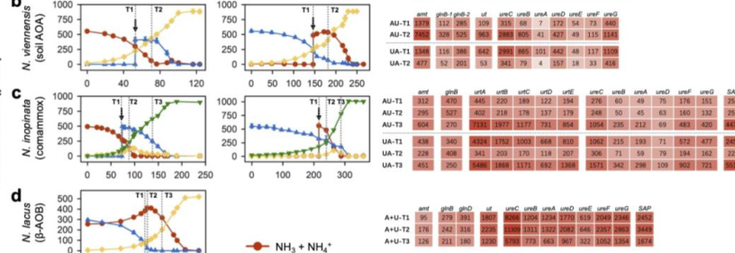

ureC2 encodes a predicted second urease alpha subunit in Nitrososphaera viennensis EN76. Its urease activity is inferred from EC/domain evidence and EN76 reports of two ureABC copies; direct literature for NVIE_015020 itself was not found in the Falcon report.
| GO Term | Evidence | Action | Reason |
|---|---|---|---|
|
GO:0009039
urease activity
|
IEA
GO_REF:0000120 |
ACCEPT |
Summary: ACCEPT. UreC is the catalytic alpha subunit of urease, EC 3.5.1.5.
Reason: The sequence is annotated as urease EC 3.5.1.5 and carries conserved urease alpha-subunit family signatures, including TIGR01792 and PANTHER PTHR43440. Falcon research did not find a primary paper explicitly characterizing NVIE_015020, so this ACCEPT is paralog/family inference rather than direct locus-specific evidence.
Supporting Evidence:
file:9ARCH/ureC2/ureC2-uniprot.txt
RecName: Full=Urease; EC=3.5.1.5.
file:9ARCH/ureC2/ureC2-uniprot.txt
NCBIfam; TIGR01792; urease_alph; 1.
file:9ARCH/ureC2/ureC2-deep-research-falcon.md
The report found no retrieved primary paper explicitly naming NVIE_015020/A0A060HQC5, but comparative genomics reports two ureABC copies in EN76, consistent with a ureC paralog.
|
|
GO:0016151
nickel cation binding
|
IEA
GO_REF:0000120 |
ACCEPT |
Summary: ACCEPT. Nickel binding is expected for urease catalytic subunits.
Reason: Urease is a nickel metalloenzyme, and UniProt explicitly states that this subunit binds two nickel ions. Family research notes rare iron ureases, so this nickel annotation is accepted from the gene-specific UniProt metal-binding evidence rather than from family membership alone.
Supporting Evidence:
file:9ARCH/ureC2/ureC2-uniprot.txt
Binds 2 nickel ions per subunit.
file:interpro/panther/PTHR43440/PTHR43440-deep-research-falcon.md
PTHR43440 family research supports nickel-dependent urease annotations for canonical UreC homologs with explicit Ni-binding evidence, while warning that iron urease paralogs make blanket nickel propagation unsafe.
|
|
GO:0016787
hydrolase activity
|
IEA
GO_REF:0000120 |
KEEP AS NON CORE |
Summary: KEEP_AS_NON_CORE. Correct but less informative than urease activity.
Reason: This parent hydrolase term is correct for urease chemistry but less informative than the specific GO:0009039 urease activity annotation.
Supporting Evidence:
file:9ARCH/ureC2/ureC2-uniprot.txt
RecName: Full=Urease; EC=3.5.1.5.
|
|
GO:0016810
hydrolase activity, acting on carbon-nitrogen (but not peptide) bonds
|
IEA
GO_REF:0000002 |
KEEP AS NON CORE |
Summary: KEEP_AS_NON_CORE. Correct parent activity for urease, but the specific urease activity is the core molecular function.
Reason: The carbon-nitrogen hydrolase parent is compatible with the reaction, but the gene product is better represented by urease activity.
Supporting Evidence:
file:9ARCH/ureC2/ureC2-uniprot.txt
Reaction=urea + 2 H2O + H(+) = hydrogencarbonate + 2 NH4(+).
|
|
GO:0019627
urea metabolic process
|
IEA
GO_REF:0000104 |
ACCEPT |
Summary: ACCEPT. Urease directly metabolizes urea.
Reason: Urea is the direct substrate of the urease reaction, so urea metabolic process is a plausible direct BP annotation for ureC2. The evidence is EC/domain/paralog inference; the report did not recover ureC2-specific expression or biochemical assays.
Supporting Evidence:
file:9ARCH/ureC2/ureC2-uniprot.txt
Reaction=urea + 2 H2O + H(+) = hydrogencarbonate + 2 NH4(+).
file:9ARCH/ureC2/ureC2-deep-research-falcon.md
Urease reviews and EN76 comparative genomics support a urease-alpha paralog interpretation, but the directly regulated EN76 urease locus in recent transcriptomic work is NVIE_014740, not NVIE_015020.
|
|
GO:0043419
urea catabolic process
|
IEA
GO_REF:0000041 |
ACCEPT |
Summary: ACCEPT. UniPathway correctly adds urea catabolic process context for a urease catalytic subunit.
Reason: UniPathway is specific and mechanistically correct here: the enzyme catalyzes the single urease-route step of urea degradation. For ureC2, the curation should record that pathway placement is inferred from the conserved urease-alpha assignment and duplicated ureABC context, not from direct NVIE_015020 experiments.
Supporting Evidence:
file:9ARCH/ureC2/ureC2-uniprot.txt
PATHWAY: Nitrogen metabolism; urea degradation; CO(2) and NH(3) from urea (urease route): step 1/1.
file:interpro/panther/PTHR43440/PTHR43440-deep-research-falcon.md
Family research identifies canonical UreC/large-subunit ureases as the catalytic subunits for urea hydrolysis, supporting urea catabolism for conserved UreC proteins.
file:9ARCH/ureC2/ureC2-deep-research-falcon.md
Comparative genomics reports N. viennensis EN76 has two ureABC copies, supporting a ureC2 paralog, while direct substrate-responsive expression evidence was recovered for ureC/NVIE_014740 rather than NVIE_015020.
|
The research report should be a detailed narrative explaining the function, biological processes, and localization of the gene product. Citations should be given for all claims.
You should prioritize authoritative reviews and primary scientific literature when conducting research. You can supplement
this with annotations you find in gene/protein databases, but these can be outdated or inaccurate.
We are specifically interested in the primary function of the gene - for enzymes, what reaction is catalyzed, and what is the substrate specificity? For transporters, what is the substrate? For structural proteins or adapters, what is the broader structural role? For signaling molecules, what is the role in the pathway.
We are interested in where in or outside the cell the gene product carries out its function.
We are also interested in the signaling or biochemical pathways in which the gene functions. We are less interested in broad pleiotropic effects, except where these elucidate the precise role.
Include evidence where possible. We are interested in both experimental evidence as well as inference from structure, evolution, or bioinformatic analysis. Precise studies should be prioritized over high-throughput, where available.
The UniProt accession A0A060HQC5 is annotated as Urease (EC 3.5.1.5) with gene name ureC2 and ORF name NVIE_015020 in Nitrososphaera viennensis EN76. However, the organism’s best-supported urease alpha-subunit described in recent primary literature is ureC (NVIE_014740), not NVIE_015020, and it sits in a ut–ure operon whose transcription is strongly regulated by nitrogen source (urea vs ammonia). In N. viennensis, transcripts of ut (NVIE_014780) and ureC (NVIE_014740) are ~10× higher after urea addition and ~10× lower after ammonia addition within 24 h, demonstrating direct condition-responsive expression of the characterized urease locus in EN76 (Qin et al., 2024; publication date Jan 2024). (qin2024ammoniaoxidizingbacteriaand pages 8-11, qin2024ammoniaoxidizingbacteriaand media 3dc337b2, qin2024ammoniaoxidizingbacteriaand media 6e9b78f2)
No retrieved primary paper in this tool session explicitly mentions NVIE_015020 or UniProt A0A060HQC5 by identifier. Therefore, ureC2 (NVIE_015020) should be treated as a putative urease-alpha paralog whose function is inferred from (i) urease family mechanism and (ii) evidence that EN76 contains two copies of ureABC, which makes a ureC paralog plausible. A 2023 comparative genomics study reports that Nitrososphaera viennensis EN76 harbors two copies of ureABC, consistent with a ureC paralog such as “ureC2,” but it does not map the second copy to NVIE_015020 in the excerpts available here. (Liu et al., 2023; publication date Dec 2023). (liu2023genomicinsightinto pages 4-7)
Conclusion for verification:
- Confirmed for EN76: a urease alpha-subunit ureC (NVIE_014740) in a regulated ut–ure operon, with direct transcriptomic evidence. (qin2024ammoniaoxidizingbacteriaand pages 8-11, qin2024ammoniaoxidizingbacteriaand media 3dc337b2, qin2024ammoniaoxidizingbacteriaand media 6e9b78f2)
- Not directly confirmed from literature in this corpus: that ureC2 (NVIE_015020; A0A060HQC5) is the same locus as NVIE_014740, or that it is expressed/functional under tested conditions. Claims below about ureC2 are therefore inferences, clearly labeled.
Urease (EC 3.5.1.5) is a metalloenzyme that catalyzes urea hydrolysis. A commonly described mechanistic breakdown is that urease converts urea to ammonia and carbamate, and carbamate then decomposes spontaneously to yield a second ammonia and bicarbonate (or CO2/HCO3− depending on conditions). (hausinger2017ureaseactivation pages 1-3, nim2019thematurationpathway pages 1-3, proshlyakov2021ironcontainingureases. pages 1-2)
Across conventional ureases, the dominant and best-supported substrate is urea; this is the basis for annotating ureC-family genes as urea-hydrolyzing enzymes. (hausinger2017ureaseactivation pages 1-3, nim2019thematurationpathway pages 1-3)
In many bacteria, urease comprises three structural subunits, with the α (large/catalytic) subunit encoded by ureC and the conserved active site residing in this α subunit; the β and γ subunits are typically encoded by ureB and ureA, respectively, with variations such as fused subunits in some taxa. (hausinger2017ureaseactivation pages 1-3, nim2019thematurationpathway pages 1-3, proshlyakov2021ironcontainingureases. pages 1-2)
Functional annotation implication for ureC2: if A0A060HQC5 is truly a UreC-family protein in EN76, it most likely encodes an α/large catalytic subunit of a urease enzyme complex, contributing directly to urea hydrolysis. (hausinger2017ureaseactivation pages 1-3, nim2019thematurationpathway pages 1-3)
Conventional ureases typically contain a dinuclear nickel active site, often described as two Ni2+ ions bridged by a carbamylated lysine residue, with histidine/aspartate ligation. (hausinger2017ureaseactivation pages 1-3, nim2019thematurationpathway pages 1-3, proshlyakov2021ironcontainingureases. pages 1-2)
A defining feature of many urease systems is the need for accessory proteins to assemble and insert the Ni2+ metallocenter. Reviews describe a maturation pathway involving UreD (or UreH in some organisms), UreE, UreF, and UreG, with Ni transfer chaperoned along a pathway summarized as UreE → UreG → UreF/UreD → urease, and with UreG functioning as a GTPase whose activity is coupled to nickel delivery. (hausinger2017ureaseactivation pages 1-3, nim2019thematurationpathway pages 1-3, nim2019thematurationpathway pages 8-10, nim2019thematurationpathway pages 3-5, hausinger2017ureaseactivation pages 6-7, hausinger2017ureaseactivation pages 7-8)
A high-confidence EN76 urease locus includes a urease operon associated with a urea transporter gene (ut). In EN76, ureC (NVIE_014740) is reported in the same operon context with ut (NVIE_014780). This arrangement is illustrated in the paper’s Extended Data operon schematic, and the expression response is shown in the main figure heatmap. (qin2024ammoniaoxidizingbacteriaand pages 8-11, qin2024ammoniaoxidizingbacteriaand media 3dc337b2, qin2024ammoniaoxidizingbacteriaand media 6e9b78f2)
Earlier genome work on EN76 also reported a contig containing “genes encoding a potential urease operon,” providing historical genome-level support for urease capacity in this soil AOA lineage (Tourna et al., 2011; publication date Apr 2011). (tourna2011nitrososphaeraviennensisan pages 2-3)
The EN76 ut–ure locus shows strong transcriptional regulation consistent with urea utilization: ut and ureC transcripts increase after urea addition and decrease after ammonia addition, supporting a model where EN76 induces urea acquisition/hydrolysis machinery when urea is available or when ammonia is limiting. (qin2024ammoniaoxidizingbacteriaand pages 8-11, qin2024ammoniaoxidizingbacteriaand media 3dc337b2)
A 2023 nitrifier comparative genomics study reports that N. viennensis EN76 harbors two copies of ureABC, and another 2014 genome analysis reports duplicated urease subunits in Ca. Nitrososphaera genomes (including two copies of urease subunits in Ca. Nitrososphaera evergladensis), suggesting duplication of urease structural genes can occur in this lineage. These results support the plausibility that ureC2 (NVIE_015020) corresponds to a second ureC-like copy in EN76. (liu2023genomicinsightinto pages 4-7, zhalnina2014genomesequenceof pages 5-6)
However, these sources do not provide locus-level mapping of the “second copy” to NVIE_015020 in the excerpts available here, and they do not provide expression or biochemical validation specific to ureC2. (liu2023genomicinsightinto pages 4-7, zhalnina2014genomesequenceof pages 5-6)
Given the conserved urease system mechanism and the explicit annotation of A0A060HQC5 as urease (EC 3.5.1.5), the most parsimonious functional annotation is:
- ureC2 encodes a urease α/large catalytic subunit participating in urea hydrolysis to produce ammonia (and carbon dioxide/bicarbonate via carbamate decomposition). (hausinger2017ureaseactivation pages 1-3, nim2019thematurationpathway pages 1-3, proshlyakov2021ironcontainingureases. pages 1-2)
The authoritative urease reviews describe urease as a specialized enzyme for urea hydrolysis, and the core catalytic architecture is conserved; thus ureC-family genes overwhelmingly imply urea as substrate. (hausinger2017ureaseactivation pages 1-3, nim2019thematurationpathway pages 1-3)
For ammonia-oxidizing archaea tested (including EN76), no extracellular urease activity was observed and urease genes lacked secretion signals, supporting cytoplasmic localization of urease activity (i.e., urea is imported and hydrolyzed intracellularly). This inference is consistent with EN76 having a urea transporter gene colocated with urease genes. (qin2023differentialsubstrateaffinity pages 4-7, qin2024ammoniaoxidizingbacteriaand media 3dc337b2, qin2024ammoniaoxidizingbacteriaand media 6e9b78f2)
In AOA, urease provides a route to generate NH3/NH4+ from urea, which can feed:
- ammonia oxidation (energy metabolism) when ammonia is limiting, and/or
- nitrogen assimilation pathways.
Recent work emphasizes that AOA (including EN76) often prefer ammonia and regulate urea utilization, consistent with urease acting as an alternative N (and potentially energy) source rather than always the preferred substrate. (qin2023differentialsubstrateaffinity pages 4-7, qin2024ammoniaoxidizingbacteriaand pages 58-62)
A 2024 Nature Microbiology study provides direct evidence that EN76’s urea transporter and urease genes are rapidly transcriptionally regulated by nitrogen source, with strong induction upon urea addition and repression upon ammonia addition. This connects the urease locus to physiological nitrogen switching strategies in nitrifiers. (qin2024ammoniaoxidizingbacteriaand pages 8-11, qin2024ammoniaoxidizingbacteriaand media 3dc337b2, qin2024ammoniaoxidizingbacteriaand media 6e9b78f2)
A 2023 ISME Journal study analyzing soil archaeal lineages estimated that ~85.7–89.8% of AOA in upland soils encoded urease (ureC) on average, indicating broad potential for urea utilization among soil Nitrososphaeria lineages (including Nitrososphaerales). (zhao2023nitrogenandphosphorous pages 5-6)
The same study found many Nitrososphaerales families had ureC transcripts 13–22× higher and ut transcripts 41–177× higher than an ammonium-replete N. viennensis culture reference, supporting the view that urea acquisition/hydrolysis is often upregulated in soils relative to nutrient-replete laboratory conditions. (zhao2023nitrogenandphosphorous pages 7-9)
A 2023 comparative genomics survey of nitrifiers reports widespread urease gene clusters in AOA, with urea transporters such as dur3 and utp/ut rather than bacterial urtABCDE. It also reports that EN76 harbors two copies of ureABC, relevant for interpreting a ureC2 paralog. (liu2023genomicinsightinto pages 9-11, liu2023genomicinsightinto pages 4-7)
A 2024 ISME Journal study combining metagenomics and NanoSIMS reported that 39% of deep-sea cells in a NE Pacific region contained ureC, and global surveys suggested ~10–46% of deep-sea cells contain ureC, indicating a large reservoir of urea-hydrolyzing potential in the dark ocean microbiome. They also found that on average ~25% of deep-sea cells assimilated urea-derived N (representing 60% of detectably active cells). (arandiagorostidi2024ureaassimilationand pages 1-2)
Although ureC2 in EN76 is basic science rather than a directly engineered target, urease biology in nitrifiers underpins applied domains:
Agricultural nitrogen management: Urea fertilizers are globally important; microbial urease and nitrification contribute to nitrogen transformations and losses. Mechanistic understanding of urease genes (ureC) and their regulation in soil nitrifiers helps interpret how fertilization regimes may shift nitrifier function and N cycling. Soil studies show high prevalence and expression of ureC among soil AOA lineages, supporting its relevance in managed soils. (zhao2023nitrogenandphosphorous pages 5-6, zhao2023nitrogenandphosphorous pages 7-9)
Environmental monitoring and modeling: ureC abundance and expression are used as indicators of urea utilization capacity in ecosystems. Recent ocean work quantifies ureC prevalence at large scales and links it to urea assimilation and nitrification in the deep sea. (arandiagorostidi2024ureaassimilationand pages 1-2)
Bioprocesses involving nitrogen cycling: While EN76 itself is not a standard wastewater workhorse, insights into how nitrifiers regulate urea uptake and hydrolysis can inform design/operation of nitrifying systems where urea or urea-derived compounds are present, and help interpret gene-expression readouts in engineered microbiomes. The 2024 study provides a general framework for differential substrate preference and regulatory control among ammonia oxidizers. (qin2024ammoniaoxidizingbacteriaand pages 8-11)
Authoritative reviews emphasize that urease activity depends not just on ureC but also on a dedicated maturation pathway for safe Ni2+ delivery (UreD/E/F/G; UreG GTPase), implying that functional annotation of ureC2 should consider whether accessory genes are present and co-regulated in the genome neighborhood or regulon. (nim2019thematurationpathway pages 1-3, nim2019thematurationpathway pages 8-10, hausinger2017ureaseactivation pages 6-7)
The available literature here supports duplication of ureABC in EN76 and related Nitrososphaera lineages but does not experimentally resolve paralog specialization. Plausible expert-level hypotheses (not directly proven here) include: differential regulation under distinct nitrogen regimes, redundancy for robustness, or divergent enzyme kinetics/metal handling. Any such claims require dedicated paralog-specific expression/proteomics/biochemistry, which is not provided for NVIE_015020 in the retrieved corpus. (liu2023genomicinsightinto pages 4-7, zhalnina2014genomesequenceof pages 5-6)
The following table compiles key claims, gene IDs, and limitations—especially the critical distinction between EN76 ureC (NVIE_014740) supported by experiments and the target ureC2 (NVIE_015020; A0A060HQC5) not explicitly mentioned in retrieved primary literature.
| Topic | Key finding | Specific gene/locus (if given) | Evidence type (genomic, transcriptomic, physiology, review) | Source (first author year, journal) | URL | Notes/limitations |
|---|---|---|---|---|---|---|
| Verified urease operon in N. viennensis EN76 | A urease alpha-subunit gene annotated as ureC (NVIE_014740) occurs in a ut–ure operon; transcript levels of ut and ureC increase strongly after urea addition and decrease after ammonia addition, indicating nitrogen-source-responsive regulation. | ureC = NVIE_014740; ut = NVIE_014780 | Genomic + transcriptomic | Qin 2024, Nature Microbiology | https://doi.org/10.1038/s41564-023-01593-7 | This is the clearest organism-specific evidence for EN76 urease expression, but it refers to NVIE_014740, not the UniProt target A0A060HQC5 / NVIE_015020 (ureC2); therefore these should not be conflated. Operon schematic also shown in figure context. (qin2024ammoniaoxidizingbacteriaand pages 8-11, qin2024ammoniaoxidizingbacteriaand media 3dc337b2, qin2024ammoniaoxidizingbacteriaand media 6e9b78f2) |
| Potential second urease copy in N. viennensis EN76 | Comparative genomics reported that N. viennensis EN76 harbors two copies of ureABC. | Strain-level duplication reported; specific second-copy locus not given in excerpt | Genomic | Liu 2023, Frontiers in Microbiology | https://doi.org/10.3389/fmicb.2023.1273211 | Supports the possibility of a second urease alpha-subunit paralog, consistent with a ureC2-like annotation, but the excerpt does not explicitly map this to NVIE_015020/A0A060HQC5. (liu2023genomicinsightinto pages 4-7) |
| Broader Ca. Nitrososphaera duplication pattern | In Ca. Nitrososphaera evergladensis, all urease subunits were reported in two copies, and this duplication was described as characteristic of Ca. Nitrososphaera genomes compared with other AOA examined. | ureA, ureB, ureC duplicated in Ca. N. evergladensis | Genomic | Zhalnina 2014, PLoS ONE | https://doi.org/10.1371/journal.pone.0101648 | This supports lineage-level precedent for duplicated urease genes in Nitrososphaerales/related Nitrososphaera, but is not direct proof for the exact EN76 locus NVIE_015020. (zhalnina2014genomesequenceof pages 5-6) |
| Earliest EN76 urease evidence | The original EN76 draft genome contained a contig with a potential urease operon. | Not specified in excerpt | Genomic | Tourna 2011, PNAS | https://doi.org/10.1073/pnas.1013488108 | Establishes early genome-based evidence for urease in EN76, but without locus IDs, operon order, or direct physiological proof of growth on urea in the cited excerpt. (tourna2011nitrososphaeraviennensisan pages 2-3) |
| Urease localization in AOA | No extracellular urease activity was observed in tested AOA, and urease genes lacked secretion signals; this supports cytoplasmic localization of urease in N. viennensis and related AOA. | Urease operon genes in AOA; no secretory signal reported | Physiology + genomic inference | Qin 2023, bioRxiv; Qin 2024, Nature Microbiology | https://doi.org/10.1101/2023.08.04.551995 ; https://doi.org/10.1038/s41564-023-01593-7 | Strong functional inference for subcellular localization, but not direct microscopy/protein-localization assay. (qin2023differentialsubstrateaffinity pages 4-7) |
| Urea utilization physiology in AOA including EN76 | Tested AOA, including N. viennensis, generally prefer ammonia over urea and repress urea-use functions when ammonia is available; after ammonia exhaustion, EN76 transitions to urea use. | EN76 urease pathway; specific loci not all listed in excerpt | Physiology + transcriptomic | Qin 2023, bioRxiv; Qin 2024, Nature Microbiology | https://doi.org/10.1101/2023.08.04.551995 ; https://doi.org/10.1038/s41564-023-01593-7 | Important for functional interpretation: urease contributes to alternative N acquisition rather than constitutive preferred substrate use under ammonia-replete conditions. (qin2023differentialsubstrateaffinity pages 4-7, qin2024ammoniaoxidizingbacteriaand pages 58-62) |
| Urease catalytic function | Urease (EC 3.5.1.5) hydrolyzes urea → ammonia + carbamate, and carbamate then decomposes to a second ammonia plus bicarbonate/CO2. The catalytic active site resides in the UreC/α subunit. | UreC = alpha/large catalytic subunit | Review/mechanistic | Hausinger 2017, Encyclopedia of Inorganic and Bioinorganic Chemistry; Nim 2019, Inorganics | https://doi.org/10.1002/9781119951438.eibc2483 ; https://doi.org/10.3390/inorganics7070085 | This is the best-supported molecular function to infer for A0A060HQC5 if it is a true urease alpha-subunit paralog. Substrate specificity is overwhelmingly urea in conventional ureases. (hausinger2017ureaseactivation pages 1-3, nim2019thematurationpathway pages 1-3, nim2019thematurationpathway pages 10-12, proshlyakov2021ironcontainingureases. pages 1-2) |
| Metal cofactor and maturation | Conventional ureases contain a dinuclear Ni2+ active site bridged by a carbamylated lysine; activation requires accessory proteins UreD/UreH, UreE, UreF, UreG, with Ni transfer along UreE → UreG → UreF/UreD → urease. | Accessory genes ureD/ureH, ureE, ureF, ureG | Review/mechanistic | Hausinger 2017, Encyclopedia; Nim 2019, Inorganics | https://doi.org/10.1002/9781119951438.eibc2483 ; https://doi.org/10.3390/inorganics7070085 | Strongly supports annotation of a urease alpha-subunit-like protein, but does not distinguish which EN76 paralog is catalytically active. (nim2019thematurationpathway pages 1-3, nim2019thematurationpathway pages 8-10, nim2019thematurationpathway pages 3-5, hausinger2017ureaseactivation pages 6-7, hausinger2017ureaseactivation pages 7-8) |
| Operon organization in AOA | Most AOA genomes contain ureABC + ureDEFG; in many AOA, urea transporter genes (dur3 and/or utp/ut) occur near urease genes. | ureABC, ureDEFG, dur3, ut/utp | Comparative genomics | Liu 2023, Frontiers in Microbiology | https://doi.org/10.3389/fmicb.2023.1273211 | Provides comparative context for EN76 operon architecture and helps explain why transporter and urease genes are often co-regulated. (liu2023genomicinsightinto pages 9-11, liu2023genomicinsightinto pages 4-7) |
| Soil AOA prevalence of ureC | In upland soils, an estimated 85.7–89.8% of AOA encoded urease (ureC) on average; ureC was detected across all Nitrososphaerales lineages sampled. | ureC | Metagenomic/statistical | Zhao 2023, The ISME Journal | https://doi.org/10.1038/s41396-023-01493-y | Supports ecological importance of urease in soil Nitrososphaeria, relevant because EN76 is a soil AOA. This is lineage/community-level, not EN76-specific. (zhao2023nitrogenandphosphorous pages 5-6) |
| Soil AOA ureC expression versus EN76 culture reference | In soil metatranscriptomes, most Nitrososphaerales families showed ureC transcripts 13–22× higher and urea transporter transcripts 41–177× higher than ammonium-replete N. viennensis reference cultures. | ureC, ut | Metatranscriptomic/statistical | Zhao 2023, The ISME Journal | https://doi.org/10.1038/s41396-023-01493-y | Suggests that field AOA often upregulate urea acquisition more strongly than EN76 grown under ammonium-replete lab conditions. (zhao2023nitrogenandphosphorous pages 7-9) |
| Deep-ocean ureC prevalence and activity | In a 2024 deep-ocean study, 39% of deep-sea cells in the sampled region contained ureC; globally, ~10–46% of deep-sea cells were estimated to contain ureC. On average, 25% of deep-sea cells assimilated urea-derived N, representing 60% of detectably active cells. | ureC | Metagenomic + single-cell activity/statistical | Arandia-Gorostidi 2024, The ISME Journal | https://doi.org/10.1093/ismejo/wrae230 | Not EN76-specific, but demonstrates contemporary ecological importance of urease-bearing nitrifiers including Nitrososphaeria. (arandiagorostidi2024ureaassimilationanda pages 13-17, arandiagorostidi2024ureaassimilationand pages 1-2) |
| Quantitative comparison of ureC vs amoA in the deep ocean | ureC was ~2× more abundant than amoA on average (0.45 ureC/recA vs 0.23 amoA/recA), implying substantial urea-cleaving potential outside strict ammonia oxidizers; ureC-containing MAGs were more abundant in the bathypelagic (2.56%) than epipelagic (0.76%). | ureC, amoA | Metagenomic/statistical | Arandia-Gorostidi 2024, bioRxiv | https://doi.org/10.1101/2024.07.26.605319 | Preprint values; useful recent quantitative context for environmental importance of urease/ureC. (arandiagorostidi2024ureaassimilationanda pages 13-17, arandiagorostidi2024ureaassimilationanda pages 8-13) |
Table: This table compiles organism-specific and comparative evidence about urease genes, operon context, regulation, localization, and ecological relevance for Nitrososphaera viennensis EN76. It is especially useful for distinguishing the experimentally supported EN76 urease locus NVIE_014740 from the less directly documented putative paralog ureC2/NVIE_015020.
Most likely molecular function (inferred): ureC2 encodes a UreC-family urease α/large catalytic subunit (EC 3.5.1.5) that catalyzes intracellular hydrolysis of urea → ammonia + carbamate (followed by carbamate → ammonia + bicarbonate/CO2), using a dinuclear Ni2+ active site assembled via accessory maturation proteins (UreD/E/F/G). (hausinger2017ureaseactivation pages 1-3, nim2019thematurationpathway pages 1-3, proshlyakov2021ironcontainingureases. pages 1-2)
Most likely biological role in EN76: provide ammonia from urea as an alternative nitrogen (and potentially energy) source under ammonia limitation, consistent with strong urea-responsive regulation observed for the characterized EN76 urease locus and widespread soil AOA ureC capacity/expression. (qin2024ammoniaoxidizingbacteriaand pages 8-11, zhao2023nitrogenandphosphorous pages 5-6, zhao2023nitrogenandphosphorous pages 7-9)
Localization: cytoplasmic, based on lack of evidence for extracellular urease activity and absence of secretion signals in tested AOA, consistent with presence of urea transporters colocated with ure genes. (qin2023differentialsubstrateaffinity pages 4-7)
Critical limitation: this report cannot attribute the above properties specifically to NVIE_015020 (A0A060HQC5) rather than the experimentally referenced ureC NVIE_014740, because NVIE_015020 is not explicitly cited in the retrieved primary literature; ureC2-specific conclusions therefore remain inferential, albeit supported by (i) urease mechanism reviews and (ii) duplication of ureABC in EN76 reported by comparative genomics. (liu2023genomicinsightinto pages 4-7)
References
(qin2024ammoniaoxidizingbacteriaand pages 8-11): Wei Qin, Stephany P. Wei, Yue Zheng, Eunkyung Choi, Xiangpeng Li, Juliet Johnston, Xianhui Wan, Britt Abrahamson, Zachary Flinkstrom, Baozhan Wang, Hanyan Li, Lei Hou, Qing Tao, Wyatt W. Chlouber, Xin Sun, Michael Wells, Long Ngo, Kristopher A. Hunt, Hidetoshi Urakawa, Xuanyu Tao, Dongyu Wang, Xiaoyuan Yan, Dazhi Wang, Chongle Pan, Peter K. Weber, Jiandong Jiang, Jizhong Zhou, Yao Zhang, David A. Stahl, Bess B. Ward, Xavier Mayali, Willm Martens-Habbena, and Mari-Karoliina H. Winkler. Ammonia-oxidizing bacteria and archaea exhibit differential nitrogen source preferences. Nature microbiology, 9:524-536, Jan 2024. URL: https://doi.org/10.1038/s41564-023-01593-7, doi:10.1038/s41564-023-01593-7. This article has 122 citations and is from a highest quality peer-reviewed journal.
(qin2024ammoniaoxidizingbacteriaand media 3dc337b2): Wei Qin, Stephany P. Wei, Yue Zheng, Eunkyung Choi, Xiangpeng Li, Juliet Johnston, Xianhui Wan, Britt Abrahamson, Zachary Flinkstrom, Baozhan Wang, Hanyan Li, Lei Hou, Qing Tao, Wyatt W. Chlouber, Xin Sun, Michael Wells, Long Ngo, Kristopher A. Hunt, Hidetoshi Urakawa, Xuanyu Tao, Dongyu Wang, Xiaoyuan Yan, Dazhi Wang, Chongle Pan, Peter K. Weber, Jiandong Jiang, Jizhong Zhou, Yao Zhang, David A. Stahl, Bess B. Ward, Xavier Mayali, Willm Martens-Habbena, and Mari-Karoliina H. Winkler. Ammonia-oxidizing bacteria and archaea exhibit differential nitrogen source preferences. Nature microbiology, 9:524-536, Jan 2024. URL: https://doi.org/10.1038/s41564-023-01593-7, doi:10.1038/s41564-023-01593-7. This article has 122 citations and is from a highest quality peer-reviewed journal.
(qin2024ammoniaoxidizingbacteriaand media 6e9b78f2): Wei Qin, Stephany P. Wei, Yue Zheng, Eunkyung Choi, Xiangpeng Li, Juliet Johnston, Xianhui Wan, Britt Abrahamson, Zachary Flinkstrom, Baozhan Wang, Hanyan Li, Lei Hou, Qing Tao, Wyatt W. Chlouber, Xin Sun, Michael Wells, Long Ngo, Kristopher A. Hunt, Hidetoshi Urakawa, Xuanyu Tao, Dongyu Wang, Xiaoyuan Yan, Dazhi Wang, Chongle Pan, Peter K. Weber, Jiandong Jiang, Jizhong Zhou, Yao Zhang, David A. Stahl, Bess B. Ward, Xavier Mayali, Willm Martens-Habbena, and Mari-Karoliina H. Winkler. Ammonia-oxidizing bacteria and archaea exhibit differential nitrogen source preferences. Nature microbiology, 9:524-536, Jan 2024. URL: https://doi.org/10.1038/s41564-023-01593-7, doi:10.1038/s41564-023-01593-7. This article has 122 citations and is from a highest quality peer-reviewed journal.
(liu2023genomicinsightinto pages 4-7): Qian Liu, Yuhao Chen, and Xue-Wei Xu. Genomic insight into strategy, interaction and evolution of nitrifiers in metabolizing key labile-dissolved organic nitrogen in different environmental niches. Frontiers in Microbiology, Dec 2023. URL: https://doi.org/10.3389/fmicb.2023.1273211, doi:10.3389/fmicb.2023.1273211. This article has 10 citations and is from a peer-reviewed journal.
(hausinger2017ureaseactivation pages 1-3): Robert P. Hausinger. Urease activation. Encyclopedia of Inorganic and Bioinorganic Chemistry, pages 1-10, Sep 2017. URL: https://doi.org/10.1002/9781119951438.eibc2483, doi:10.1002/9781119951438.eibc2483. This article has 2 citations.
(nim2019thematurationpathway pages 1-3): Yap Shing Nim and Kam-Bo Wong. The maturation pathway of nickel urease. Inorganics, 7:85, Jul 2019. URL: https://doi.org/10.3390/inorganics7070085, doi:10.3390/inorganics7070085. This article has 51 citations.
(proshlyakov2021ironcontainingureases. pages 1-2): Denis A. Proshlyakov, Mark A. Farrugia, Yegor D. Proshlyakov, and Robert P. Hausinger. Iron-containing ureases. Coordination chemistry reviews, 448:214190, Dec 2021. URL: https://doi.org/10.1016/j.ccr.2021.214190, doi:10.1016/j.ccr.2021.214190. This article has 17 citations and is from a peer-reviewed journal.
(nim2019thematurationpathway pages 8-10): Yap Shing Nim and Kam-Bo Wong. The maturation pathway of nickel urease. Inorganics, 7:85, Jul 2019. URL: https://doi.org/10.3390/inorganics7070085, doi:10.3390/inorganics7070085. This article has 51 citations.
(nim2019thematurationpathway pages 3-5): Yap Shing Nim and Kam-Bo Wong. The maturation pathway of nickel urease. Inorganics, 7:85, Jul 2019. URL: https://doi.org/10.3390/inorganics7070085, doi:10.3390/inorganics7070085. This article has 51 citations.
(hausinger2017ureaseactivation pages 6-7): Robert P. Hausinger. Urease activation. Encyclopedia of Inorganic and Bioinorganic Chemistry, pages 1-10, Sep 2017. URL: https://doi.org/10.1002/9781119951438.eibc2483, doi:10.1002/9781119951438.eibc2483. This article has 2 citations.
(hausinger2017ureaseactivation pages 7-8): Robert P. Hausinger. Urease activation. Encyclopedia of Inorganic and Bioinorganic Chemistry, pages 1-10, Sep 2017. URL: https://doi.org/10.1002/9781119951438.eibc2483, doi:10.1002/9781119951438.eibc2483. This article has 2 citations.
(tourna2011nitrososphaeraviennensisan pages 2-3): Maria Tourna, Michaela Stieglmeier, Anja Spang, Martin Könneke, Arno Schintlmeister, Tim Urich, Marion Engel, Michael Schloter, Michael Wagner, Andreas Richter, and Christa Schleper. Nitrososphaera viennensis, an ammonia oxidizing archaeon from soil. Proceedings of the National Academy of Sciences, 108:8420-8425, Apr 2011. URL: https://doi.org/10.1073/pnas.1013488108, doi:10.1073/pnas.1013488108. This article has 1117 citations and is from a highest quality peer-reviewed journal.
(zhalnina2014genomesequenceof pages 5-6): Kateryna V. Zhalnina, Raquel Dias, Michael T. Leonard, Patricia Dorr de Quadros, Flavio A. O. Camargo, Jennifer C. Drew, William G. Farmerie, Samira H. Daroub, and Eric W. Triplett. Genome sequence of candidatus nitrososphaera evergladensis from group i.1b enriched from everglades soil reveals novel genomic features of the ammonia-oxidizing archaea. PLoS ONE, 9:e101648, Jul 2014. URL: https://doi.org/10.1371/journal.pone.0101648, doi:10.1371/journal.pone.0101648. This article has 129 citations and is from a peer-reviewed journal.
(qin2023differentialsubstrateaffinity pages 4-7): Wei Qin, Stephany P. Wei, Yue Zheng, Eunkyung Choi, Xiangpeng Li, Juliet Johnston, Xianhui Wan, Britt Abrahamson, Zachary Flinkstrom, Baozhan Wang, Hanyan Li, Lei Hou, Qing Tao, Wyatt W. Chlouber, Xin Sun, Michael Wells, Long Ngo, Kristopher A. Hunt, Hidetoshi Urakawa, Xuanyu Tao, Dongyu Wang, Xiaoyuan Yan, Dazhi Wang, Chongle Pan, Peter K. Weber, Jiandong Jiang, Jizhong Zhou, Yao Zhang, David A. Stahl, Bess B. Ward, Xavier Mayali, Willm Martens-Habbena, and Mari-Karoliina H. Winkler. Differential substrate affinity and catabolite repression enable preferential use of urea by ammonia-oxidizing bacteria. bioRxiv, Aug 2023. URL: https://doi.org/10.1101/2023.08.04.551995, doi:10.1101/2023.08.04.551995. This article has 1 citations.
(qin2024ammoniaoxidizingbacteriaand pages 58-62): Wei Qin, Stephany P. Wei, Yue Zheng, Eunkyung Choi, Xiangpeng Li, Juliet Johnston, Xianhui Wan, Britt Abrahamson, Zachary Flinkstrom, Baozhan Wang, Hanyan Li, Lei Hou, Qing Tao, Wyatt W. Chlouber, Xin Sun, Michael Wells, Long Ngo, Kristopher A. Hunt, Hidetoshi Urakawa, Xuanyu Tao, Dongyu Wang, Xiaoyuan Yan, Dazhi Wang, Chongle Pan, Peter K. Weber, Jiandong Jiang, Jizhong Zhou, Yao Zhang, David A. Stahl, Bess B. Ward, Xavier Mayali, Willm Martens-Habbena, and Mari-Karoliina H. Winkler. Ammonia-oxidizing bacteria and archaea exhibit differential nitrogen source preferences. Nature microbiology, 9:524-536, Jan 2024. URL: https://doi.org/10.1038/s41564-023-01593-7, doi:10.1038/s41564-023-01593-7. This article has 122 citations and is from a highest quality peer-reviewed journal.
(zhao2023nitrogenandphosphorous pages 5-6): Jun Zhao, Laibin Huang, Seemanti Chakrabarti, Jennifer Cooper, EunKyung Choi, Carolina Ganan, Bryn Tolchinsky, Eric W Triplett, Samira H Daroub, and Willm Martens-Habbena. Nitrogen and phosphorous acquisition strategies drive coexistence patterns among archaeal lineages in soil. The ISME Journal, 17:1839-1850, Aug 2023. URL: https://doi.org/10.1038/s41396-023-01493-y, doi:10.1038/s41396-023-01493-y. This article has 25 citations.
(zhao2023nitrogenandphosphorous pages 7-9): Jun Zhao, Laibin Huang, Seemanti Chakrabarti, Jennifer Cooper, EunKyung Choi, Carolina Ganan, Bryn Tolchinsky, Eric W Triplett, Samira H Daroub, and Willm Martens-Habbena. Nitrogen and phosphorous acquisition strategies drive coexistence patterns among archaeal lineages in soil. The ISME Journal, 17:1839-1850, Aug 2023. URL: https://doi.org/10.1038/s41396-023-01493-y, doi:10.1038/s41396-023-01493-y. This article has 25 citations.
(liu2023genomicinsightinto pages 9-11): Qian Liu, Yuhao Chen, and Xue-Wei Xu. Genomic insight into strategy, interaction and evolution of nitrifiers in metabolizing key labile-dissolved organic nitrogen in different environmental niches. Frontiers in Microbiology, Dec 2023. URL: https://doi.org/10.3389/fmicb.2023.1273211, doi:10.3389/fmicb.2023.1273211. This article has 10 citations and is from a peer-reviewed journal.
(arandiagorostidi2024ureaassimilationand pages 1-2): Nestor Arandia-Gorostidi, Alexander L Jaffe, Alma E Parada, Bennett J Kapili, Karen L Casciotti, Rebecca S R Salcedo, Chloé M J Baumas, and Anne E Dekas. Urea assimilation and oxidation support activity of phylogenetically diverse microbial communities of the dark ocean. The ISME Journal, Jan 2024. URL: https://doi.org/10.1093/ismejo/wrae230, doi:10.1093/ismejo/wrae230. This article has 10 citations.
(nim2019thematurationpathway pages 10-12): Yap Shing Nim and Kam-Bo Wong. The maturation pathway of nickel urease. Inorganics, 7:85, Jul 2019. URL: https://doi.org/10.3390/inorganics7070085, doi:10.3390/inorganics7070085. This article has 51 citations.
(arandiagorostidi2024ureaassimilationanda pages 13-17): Nestor Arandia-Gorostidi, Alexander L. Jaffe, Alma E. Parada, Bennett J. Kapili, Karen L. Casciotti, Rebecca S. R. Salcedo, Chloé M. J. Baumas, and Anne E. Dekas. Urea assimilation and oxidation supports the activity of a phylogenetically diverse microbial community in the dark ocean. bioRxiv, Jul 2024. URL: https://doi.org/10.1101/2024.07.26.605319, doi:10.1101/2024.07.26.605319. This article has 1 citations.
(arandiagorostidi2024ureaassimilationanda pages 8-13): Nestor Arandia-Gorostidi, Alexander L. Jaffe, Alma E. Parada, Bennett J. Kapili, Karen L. Casciotti, Rebecca S. R. Salcedo, Chloé M. J. Baumas, and Anne E. Dekas. Urea assimilation and oxidation supports the activity of a phylogenetically diverse microbial community in the dark ocean. bioRxiv, Jul 2024. URL: https://doi.org/10.1101/2024.07.26.605319, doi:10.1101/2024.07.26.605319. This article has 1 citations.

id: A0A060HQC5
gene_symbol: ureC2
product_type: PROTEIN
status: DRAFT
taxon:
id: NCBITaxon:926571
label: Nitrososphaera viennensis EN76
description: >-
ureC2 encodes a predicted second urease alpha subunit in Nitrososphaera
viennensis EN76. Its urease activity is inferred from EC/domain evidence and
EN76 reports of two ureABC copies; direct literature for NVIE_015020 itself
was not found in the Falcon report.
existing_annotations:
- term:
id: GO:0009039
label: urease activity
evidence_type: IEA
original_reference_id: GO_REF:0000120
review:
summary: >-
ACCEPT. UreC is the catalytic alpha subunit of urease, EC 3.5.1.5.
action: ACCEPT
reason: >-
The sequence is annotated as urease EC 3.5.1.5 and carries conserved
urease alpha-subunit family signatures, including TIGR01792 and PANTHER
PTHR43440. Falcon research did not find a primary paper explicitly
characterizing NVIE_015020, so this ACCEPT is paralog/family inference
rather than direct locus-specific evidence.
supported_by:
- reference_id: file:9ARCH/ureC2/ureC2-uniprot.txt
supporting_text: 'RecName: Full=Urease; EC=3.5.1.5.'
- reference_id: file:9ARCH/ureC2/ureC2-uniprot.txt
supporting_text: NCBIfam; TIGR01792; urease_alph; 1.
- reference_id: file:9ARCH/ureC2/ureC2-deep-research-falcon.md
supporting_text: >-
The report found no retrieved primary paper explicitly naming
NVIE_015020/A0A060HQC5, but comparative genomics reports two ureABC
copies in EN76, consistent with a ureC paralog.
- term:
id: GO:0016151
label: nickel cation binding
evidence_type: IEA
original_reference_id: GO_REF:0000120
review:
summary: >-
ACCEPT. Nickel binding is expected for urease catalytic subunits.
action: ACCEPT
reason: >-
Urease is a nickel metalloenzyme, and UniProt explicitly states that this
subunit binds two nickel ions. Family research notes rare iron ureases,
so this nickel annotation is accepted from the gene-specific UniProt
metal-binding evidence rather than from family membership alone.
supported_by:
- reference_id: file:9ARCH/ureC2/ureC2-uniprot.txt
supporting_text: Binds 2 nickel ions per subunit.
- reference_id: file:interpro/panther/PTHR43440/PTHR43440-deep-research-falcon.md
supporting_text: >-
PTHR43440 family research supports nickel-dependent urease annotations
for canonical UreC homologs with explicit Ni-binding evidence, while
warning that iron urease paralogs make blanket nickel propagation
unsafe.
- term:
id: GO:0016787
label: hydrolase activity
evidence_type: IEA
original_reference_id: GO_REF:0000120
review:
summary: >-
KEEP_AS_NON_CORE. Correct but less informative than urease activity.
action: KEEP_AS_NON_CORE
reason: >-
This parent hydrolase term is correct for urease chemistry but less
informative than the specific GO:0009039 urease activity annotation.
supported_by:
- reference_id: file:9ARCH/ureC2/ureC2-uniprot.txt
supporting_text: 'RecName: Full=Urease; EC=3.5.1.5.'
- term:
id: GO:0016810
label: hydrolase activity, acting on carbon-nitrogen (but not peptide) bonds
evidence_type: IEA
original_reference_id: GO_REF:0000002
review:
summary: >-
KEEP_AS_NON_CORE. Correct parent activity for urease, but the specific
urease activity is the core molecular function.
action: KEEP_AS_NON_CORE
reason: >-
The carbon-nitrogen hydrolase parent is compatible with the reaction, but
the gene product is better represented by urease activity.
supported_by:
- reference_id: file:9ARCH/ureC2/ureC2-uniprot.txt
supporting_text: Reaction=urea + 2 H2O + H(+) = hydrogencarbonate + 2 NH4(+).
- term:
id: GO:0019627
label: urea metabolic process
evidence_type: IEA
original_reference_id: GO_REF:0000104
review:
summary: >-
ACCEPT. Urease directly metabolizes urea.
action: ACCEPT
reason: >-
Urea is the direct substrate of the urease reaction, so urea metabolic
process is a plausible direct BP annotation for ureC2. The evidence is
EC/domain/paralog inference; the report did not recover ureC2-specific
expression or biochemical assays.
supported_by:
- reference_id: file:9ARCH/ureC2/ureC2-uniprot.txt
supporting_text: Reaction=urea + 2 H2O + H(+) = hydrogencarbonate + 2 NH4(+).
- reference_id: file:9ARCH/ureC2/ureC2-deep-research-falcon.md
supporting_text: >-
Urease reviews and EN76 comparative genomics support a urease-alpha
paralog interpretation, but the directly regulated EN76 urease locus in
recent transcriptomic work is NVIE_014740, not NVIE_015020.
- term:
id: GO:0043419
label: urea catabolic process
evidence_type: IEA
original_reference_id: GO_REF:0000041
review:
summary: >-
ACCEPT. UniPathway correctly adds urea catabolic process context for a
urease catalytic subunit.
action: ACCEPT
reason: >-
UniPathway is specific and mechanistically correct here: the enzyme
catalyzes the single urease-route step of urea degradation. For ureC2,
the curation should record that pathway placement is inferred from the
conserved urease-alpha assignment and duplicated ureABC context, not from
direct NVIE_015020 experiments.
supported_by:
- reference_id: file:9ARCH/ureC2/ureC2-uniprot.txt
supporting_text: 'PATHWAY: Nitrogen metabolism; urea degradation; CO(2) and NH(3) from urea (urease route): step 1/1.'
- reference_id: file:interpro/panther/PTHR43440/PTHR43440-deep-research-falcon.md
supporting_text: >-
Family research identifies canonical UreC/large-subunit ureases as the
catalytic subunits for urea hydrolysis, supporting urea catabolism for
conserved UreC proteins.
- reference_id: file:9ARCH/ureC2/ureC2-deep-research-falcon.md
supporting_text: >-
Comparative genomics reports N. viennensis EN76 has two ureABC copies,
supporting a ureC2 paralog, while direct substrate-responsive expression
evidence was recovered for ureC/NVIE_014740 rather than NVIE_015020.
references:
- id: GO_REF:0000002
title: Gene Ontology annotation through association of InterPro records with GO terms
findings: []
- id: GO_REF:0000041
title: Gene Ontology annotation based on UniPathway vocabulary mapping
findings: []
- id: GO_REF:0000104
title: Automatic assignment of GO terms by UniProt keyword mapping
findings: []
- id: GO_REF:0000120
title: Combined Automated Annotation using Multiple IEA Methods
findings: []
- id: file:9ARCH/ureC2/ureC2-uniprot.txt
title: UniProt record for ureC2
findings:
- statement: >-
UniProt names A0A060HQC5 as a urease subunit alpha family protein.
- id: file:interpro/panther/PTHR43440/PTHR43440-deep-research-falcon.md
title: Falcon family deep research for PTHR43440 urease alpha subunits
findings:
- statement: >-
Family research supports urease activity and urea catabolism for
conserved UreC catalytic subunits, but highlights rare iron-dependent
ureases as a reason not to infer nickel binding without gene-specific
metal evidence.
- id: file:9ARCH/ureC2/ureC2-deep-research-falcon.md
title: Falcon deep research for ureC2
findings:
- statement: >-
Falcon deep research for ureC2 found no primary paper explicitly naming
NVIE_015020/A0A060HQC5. It supports ureC2 as a putative urease-alpha
paralog from EC 3.5.1.5, urease-alpha domains, and comparative genomics
reporting two ureABC copies in N. viennensis EN76.
core_functions:
- description: >-
Catalyzes urea hydrolysis as a nickel-dependent urease alpha subunit.
molecular_function:
id: GO:0009039
label: urease activity
directly_involved_in:
- id: GO:0043419
label: urea catabolic process
supported_by:
- reference_id: file:9ARCH/ureC2/ureC2-uniprot.txt
supporting_text: >-
UniProt/GOA annotate A0A060HQC5 with urease activity and UniPathway urea
catabolic process.
- reference_id: file:interpro/panther/PTHR43440/PTHR43440-deep-research-falcon.md
supporting_text: >-
Canonical urease large/alpha subunits catalyze urea hydrolysis, and this
sequence has explicit EC and nickel-binding support.
- reference_id: file:9ARCH/ureC2/ureC2-deep-research-falcon.md
supporting_text: >-
Falcon deep research supports a conservative ureC2 paralog annotation:
urease activity and urea catabolism are inferred from the EC/domain
profile and EN76 two-ureABC-copy context, while expression and regulation
are not established for NVIE_015020 itself.
{kind=link}